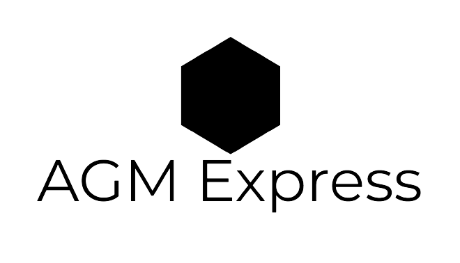

<div class="sidebar"
  [ngClass]="[collapsed ? 'sidebar-collapsed': '', darkTheme ? 'lara-indigo-dark' : 'lara-indigo-light']">
  <div class="logo-container">
    <div class="logo-text" @fadeInOut *ngIf="collapsed; else notCollapsed">
      <div class="logo-image" (click)="closesidebar()">
        
      </div>
    </div>
    <ng-template #notCollapsed>
      <div class="logo-image notCollapsed">
        <button class="logo-content" (click)="toggleCollapse()">
          A
        </button>
      </div>
    </ng-template>

    <button class="btn-close" @rotate *ngIf="collapsed" (click)="closesidebar()">
      <i class="fal fa-times close-icon"></i>
    </button>
  </div>
  <ul class="sidebar-nav">
    <li class="sidebar-nav-item" *ngFor="let data of navData">
      <a class="sidebar-nav-link" [routerLink]="[data.routeLink]" routerLinkActive="active"
        [routerLinkActiveOptions]="{exact: true}">
        <i class="sidebar-link-icon" [class]="data.icon"></i>
        <span class="sidebar-link-text" @fadeInOut *ngIf="collapsed">
          {{data.label}}
        </span>
      </a>
    </li>
  </ul>

  <div class="theme-switch-container">
    <button type="button" (click)="switchTheme()" class="theme-switch-button">
      <i class="fa" [ngClass]="{'fa-sun': darkTheme, 'fa-moon': !darkTheme}"></i>
    </button>
  </div>

  <button class="logout-button" (click)="logout()">
    <i class="fal fa-sign-out"></i>
  </button>
</div>
